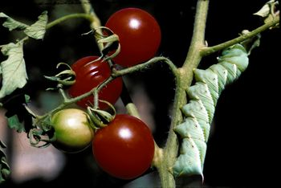

If you like tomatoes, but hate wasting your time “hunting” for tomato worms, try going out with a flashlight at night; the tomato worms will be right out in the open on the plants (not hiding). They look mean, but are harmless. The horns on their backs are only to scare you. I go out at night with a coffee can to collect the “munchers,” and my chickens have a heyday the next morning eating them for breakfast!
|
 DAVID CAVAGNARO These hornworm tomato caterpillars are easy to catch at night. Your chickens will love them in the morning. |
|
|